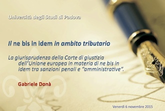

2015 - Nov 20
CONFERENCE ON CRIMINAL LAW TAX IN TORINO
- In Torino, Avv. Gabriele Donà speaks at the Conference on "The reform of tax offenses (Legislative Decree no. 158/2015)", organized by the National Association of Italian Tax Attorneys" and the "Centre for criminal tax law, EU law and related disciplines" of Torino
(see the conference poster).
2015 - Nov 6
CONFERENCE ON TAX LAW IN ROVIGO

- In Rovigo the seminar on "Il ne bis in idem in ambito tributario" hosted by the Department of Political Science, Law and International Studies of the University of Padova
(See the conference poster).
- Avv. Gabriele Donà speaks on the theme "The case law of the Court of Justice of the European Union on the subject of "ne bis in idem" between criminal and administrative sanctions.
2015 - Oct 5
Convegno di diritto europeo e
internazionale in materia di immigrazione a Bari
- Si svolgerà a Bari il Convegno “Madri migranti e minori:
diritti e accoglienza - Nuove frontiere professionali per
l’avvocato europeo" promosso dalla Commissione “Famiglia”
dell’Unione degli Avvocati europei e da altri Enti indicati
nella locandina allegata
.
- L’Avv. Gabriele Donà parlerà sul tema “La giurisprudenza
della Corte di giustizia dell’Unione europea in materia
d’asilo e immigrazione: recente casistica e aspetti
procedurali”
2015 - 18 settembre
Convegno tributario, fiscale,
amministrativo a Cuneo
- Si svolgerà a CUNEO il convegno "Novita' reati
tributari - responsabilita' amministrativa abuso di
diritto e frodi fiscali" promosso dal Centro Incontri
Provincia di Cuneo con il patrocinio degli Enti,
Istituzioni e Ordini indicati
nella locandina allegata
.
- L’Avv. Gabriele Donà parlerà sul tema “La giurisprudenza
della corte di giustizia dell'unione europea in materia di
ne bis in idem tra sanzioni penali e amministrative”
2015 - Jun 18-20
Congress of European Union Lawyers in Malaga
- In Malaga the annual congress of the Union of European
Lawyers (UAE). See below the program flyer.
- Lawyer Gabriele Donà, Vice President of the
UAE, will
speak Friday, June 19 on "The European Citizen on a
Personal Level."

2015 - May 29
Conference May 29, 2015 in Creazzo (VI)
- The center of criminal tax law hosts the conference
"TAX ASSESSMENT AND CRIME IN THE DAILY PRACTICE".
- Lawyer Gabriele Donà speaks on "The protection of the
taxpayer before the Court of Justice of the European Union
- Case studies".
- Lawyer Wilma Viscardini lectures on "More Community
principles for the protection of the taxpayer invocable
before a national court - Case studies".
- Here the poster of the conference.
Conference Program of Creazzo
2014 - Nov.
Lawyer Gabriele Donà elected Vice
President of the European Lawyers Union
- At the General Assembly of the Union of European Lawyers
(UAE) held 29 November 2014 in
Krakow the new "Bureau" of the Association was elected.
- Within the "Bureau", attorney Gabriele Donà has been appointed as Vice President of the UAE.
- The prestigious mandate will last two years and can be renewed.
==> Situs UAE
2014 - September
Wilma Viscardini awarded with the Golden Toga

- The Council of the Bar Association of Padua honors
attorney Wilma Viscardini with the "Golden Toga" in
recognition of her 50+ years of professional career.